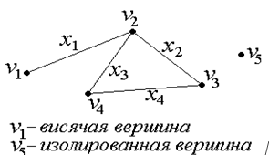
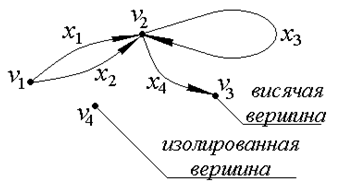
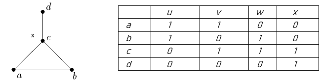
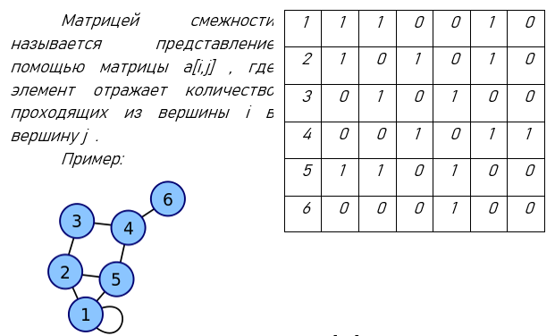
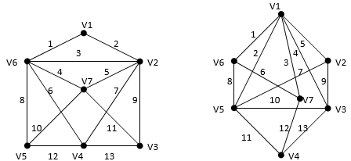

Графы. Общие сведения.
План:
1) Основные определения и понятия.
2) Понятия инцидентности, смежности и степени.
3) Маршруты, цепи и циклы.
4) Частные случаи. Связность внутри графа и расстояние.
5) Матрица инцидентности.
6) Матрица смежности.
Графом G(V,X) называется совокупность двух множеств – непустого множества вершин V и множества ребер X (неупорядоченных пар различных элементов множества V). Ребро связывает две вершины. Это так называемый неориентированный граф G.
Рис. 1. Неориентированный граф
G=(V, X), V={v1, v2, v3, v4, v5}, X={x1={v1,v2}, x2={v2,v3}, x3={v2,v4}, x4={v3,v4}}.
D=(V, X), V={v1, v2, v3, v4}, X={x1=(v1,v2), x2=(v1,v2), x3=(v2,v2), x4=(v2,v3)}.
Если v и w – вершины, а x = (v,w) – соединяющее их ребро, то вершина v и ребро x инцидентны, как и вершина w и ребро x.
x = (v,w) vx wx.
Вершины v, w называются смежными, если они инцидентны одному и тому же ребру.
(v,w)x.
Ребра называются смежными, если они имеют общую вершину.
Множество вершин, смежных с вершиной v, называется множеством смежности вершины v и обозначается Г(v).
Степенью вершины v графа G называется число ребер (v) графа G, инцидентных вершине v.
Например, на рис.1 вершина v1 имеет степень 1, вершина v2 имеет степень 3, вершина v3 имеет степень 2, вершина v4 имеет степень 2, вершина v5 имеет степень 0.
Вершина графа, имеющая степень 0 (не инцидентная ни одному из ребер) называется изолированной, а степень 1 (инцидентная одному ребру) – висячей.
Маршрутом называется чередующаяся последовательность вершин и ребер графа:
v1,x1,v2,x2,v3,...,xk,vk+1 в которой любые два соседних элемента инцидентны. Для обычного неориентированного графа достаточно указать в маршруте только последовательность ребер или вершин, т.к. там нет петель. Если v1 и vk+1 совпадают, то маршрут замкнут. Иначе маршрут называется открытым. Цепью называется маршрут, в котором все ребра различны. Если в цепи также различны и вершины, то такая цепь называется простой. Замкнутая цепь, называется циклом. Цикл, в котором все вершины, кроме первой и последней, попарно различны, называется простым циклом. Граф без циклов называется ациклическим. Пример:
 1.v1,v3,v1,v4 – маршрут, но не цепь.
1.v1,v3,v1,v4 – маршрут, но не цепь.
2. v1,v3,v5,v2,v3,v4 – цепь, но не простая цепь.
3. v1,v4,v3,v2,v5 – простая цепь.
4. v1,v3,v5,v2,v3,v4,v1 – цикл, но не простой цикл.
5 v1,v3,v4,v1 –простой цикл
Существуют частные случаи цепей и циклов:
Гамильтонова цепь (цикл) − простая цепь (цикл), проходящая через все вершины.
Эйлерова цепь (цикл) − цепь (цикл), содержащая все ребра графа по одному разу.
Для Эйлеровой цепи и цикла существуют 2 утверждения:
Утверждение 1. Для того чтобы связный псевдограф G обладал Эйлеровым циклом, необходимо и достаточно, чтобы степени всех его вершин были четными.
Утверждение 2. Для того чтобы связный псевдограф G обладал Эйлеровой цепью, необходимо и достаточно, чтобы он имел ровно 2 вершины нечетной степени.
Длина маршрута − число ребер в маршруте.
Расстоянием между вершинами v и w (d(v,w)) называется длина кратчайшей цепи v,w.
Также говорят о связности графа – две вершины графа связаны, если существует соединяющая их цепь. Граф, в котором все вершины связаны – называются связным.
Матрицей инцидентности называется представление графа с помощью матрицы b[i,j] , отражающей инцидентность вершин и ребер.
для неориентированного графа
Матрица инцидентности имеет размер n(G) на m(G).
Пример матрицы инцидентности:
Количество столбцов матрицы равно количеству ребер графа, количество строк матрицы – количеству вершин графа. Элемент матрицы [a,u] показывает отношение инцидентности вершины a к ребру u и равен единице (1), т.к. вершина инцидентна этому ребру. Элемент матрицы [d,w] показывает отношение инцидентности вершины d к ребру w – и равен нулю (0), т.к. вершина к этому ребру не инцидентна.
Матрица смежности графа G с конечным числом вершин n (пронумерованных числами от 1 до n) — это квадратная матрица n*n, в которой значение элемента ij равно числу рёбер из i-й вершины графа в j-ю вершину.
2. Постройте матрицу инцидентности.
3. Укажите степени вершин графа. Содержит ли граф Эйлеровую цепь? Эйлеровый цикл?
4. Составьте простую цепь длины 5 из вершины V2 в V5.
1) Основные определения и понятия.
2) Понятия инцидентности, смежности и степени.
3) Маршруты, цепи и циклы.
4) Частные случаи. Связность внутри графа и расстояние.
5) Матрица инцидентности.
6) Матрица смежности.
Основные определения и понятия.
G=(V, X), V={v1, v2, v3, v4, v5}, X={x1={v1,v2}, x2={v2,v3}, x3={v2,v4}, x4={v3,v4}}.

Если элементами множества X являются упорядоченные пары (имеют направление), то граф называется ориентированным D графом (орграфом).
Рис. 2.Ориентированный граф D=(V, X), V={v1, v2, v3, v4}, X={x1=(v1,v2), x2=(v1,v2), x3=(v2,v2), x4=(v2,v3)}.

У этого графа есть одинаковые ребра x1=(v1,v2), x2=(v1,v2). Такие ребра называются кратными.
Граф, имеющий кратные ребра называется мультиграфом.
Ребро x3 называется петлей. Если граф имеет петлю (на рис. x3={v2,v2}) то граф называется псевдографом.
Понятия инцидентности, смежности и степени.
Маршруты, цепи и циклы.
v1,x1,v2,x2,v3,...,xk,vk+1 в которой любые два соседних элемента инцидентны. Для обычного неориентированного графа достаточно указать в маршруте только последовательность ребер или вершин, т.к. там нет петель. Если v1 и vk+1 совпадают, то маршрут замкнут. Иначе маршрут называется открытым. Цепью называется маршрут, в котором все ребра различны. Если в цепи также различны и вершины, то такая цепь называется простой. Замкнутая цепь, называется циклом. Цикл, в котором все вершины, кроме первой и последней, попарно различны, называется простым циклом. Граф без циклов называется ациклическим. Пример:
2. v1,v3,v5,v2,v3,v4 – цепь, но не простая цепь.
3. v1,v4,v3,v2,v5 – простая цепь.
4. v1,v3,v5,v2,v3,v4,v1 – цикл, но не простой цикл.
5 v1,v3,v4,v1 –простой цикл
Частные случаи. Связность внутри графа и расстояние.
Матрица инцидентности.

Матрица смежности.

Элемент [1,2] равен количеству ребер в графе направленных из 1 вершины во 2 вершину. Элемент [3,5] равен количеству ребер в графе направленных из 3 вершины в 5 вершину. Первая вершина инцидентна петле, т.е. элемент [1,1] равен 1. Т.к. больше петель нет, то можно увидеть, что остальные элементы главной диагонали матрицы равны 0.
Вариант 2.

1. Составьте для него матрицу смежности. 2. Постройте матрицу инцидентности.
3. Укажите степени вершин графа. Содержит ли граф Эйлеровую цепь? Эйлеровый цикл?
4. Составьте простую цепь длины 5 из вершины V2 в V5.